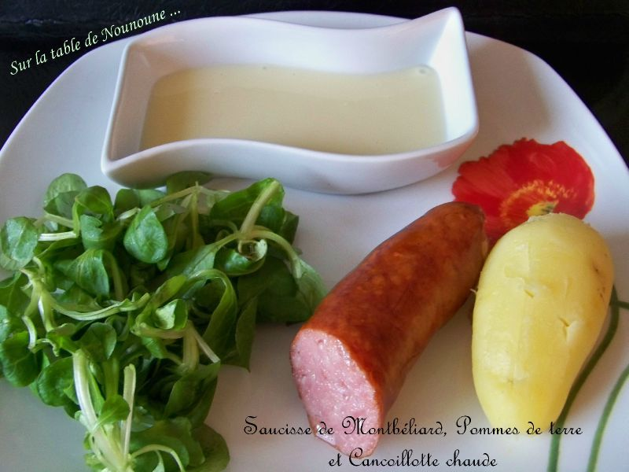

Saucisse de Montbéliard cancoillotte

Plat emblématique de la Franche‑Comté, la saucisse de Montbéliard accompagnée de cancoillotte est un grand classique de la cuisine comtoise. Simple, généreuse et réconfortante, cette recette fait partie des incontournables des repas du quotidien. La saucisse de Montbéliard, reconnaissable à son goût fumé et à sa texture ferme, se marie parfaitement avec la cancoillotte, ce fromage fondant et léger typique de la région. Servie chaude, elle apporte une touche crémeuse qui équilibre le caractère de la saucisse, tout en restant facile à digérer. Souvent accompagnée de pommes de terre vapeur, cette recette ne demande que peu d’ingrédients et très peu de préparation. C’est un plat convivial, idéal pour un repas rapide, sans complication, qui met en valeur des produits simples et authentiques. Cette association illustre parfaitement l’esprit de la cuisine comtoise : aller à l’essentiel, privilégier le goût et partager un plat chaleureux autour de la table. Pour accompagner la saucisse de Montbéliard à la cancoillotte, on privilégie des vins blancs secs et frais, capables d’équilibrer le caractère fumé de la saucisse et la douceur fondante de la cancoillotte. Un vin blanc du Jura, comme un Côtes‑du‑Jura ou un Savagnin sec, s’accorde naturellement avec ce plat régional. Sa fraîcheur et ses notes légèrement minérales apportent de la vivacité et évitent toute lourdeur en bouche. Pour ceux qui préfèrent le rouge, un vin léger et peu tannique, comme un Poulsard du Jura, peut également convenir. Il accompagne le plat avec souplesse, sans masquer les saveurs.